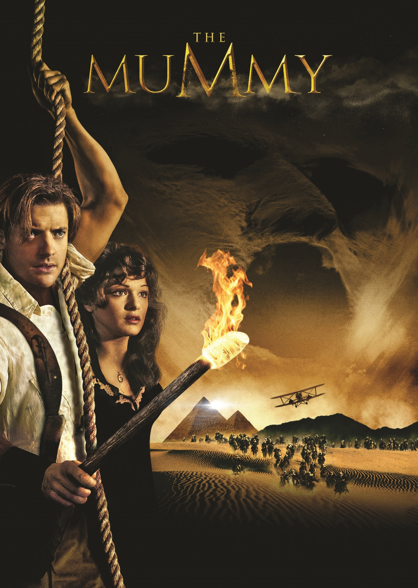

The Mummy
CHAPTER7
 It is a remake of the 1932 film of the same name.
The film follows adventurer Rick O'Connell as he travels to Hamunaptra, the City of the Dead,
with a librarian and her older brother,
where they accidentally awaken Imhotep, a cursed high priest with supernatural powers.
They kill the Pharaoh, after he discovers their relationship.
Imhotep flees, while Anck-su-namun kills herself.
At night, Evelyn reads from the Book of the Dead aloud, accidentally awakening the mummified Imhotep,
who seems to briefly confuse Evelyn with Anck-su-namun.